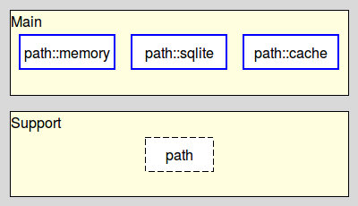
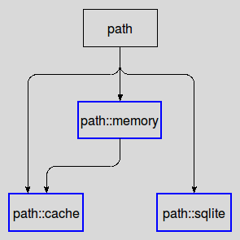

path-introduction - Path - Introduction to the project
Welcome to the Path project, written by Andreas Kupries.
For availability please read Path - How To Get The Sources.
path is a set of 4 related Tcl packages for the interning of paths, i.e. the creation of a mapping from lists of strings to unique integer identifiers. The differences between the packages are mainly what type of storage is used.
All packages to one of two layers, as shown below:

Note that:
Packages marked with a dashed border are private.
Packages marked with an unbroken blue border are fully public.
The topmost layer contains the various public storage backends.
The other, supporting, layer contains only a single package, path, the base class for all others.
The dependencies between the packages are very straight-forward:

While the current set of packages should cover most to all of the common cases where is always the possibility of encountering unanticipated situations.
Extending it is as easy as adding additional packages to the project. In the case of custom storage backends such a package has to be derived from the base class provided by path.
Path - Introduction to the project
Both the package(s) and this documentation will undoubtedly contain bugs and other problems. Please report such at Path Tickets.
Please also report any ideas you may have for enhancements of either package(s) and/or documentation.
deduplication, hierarchical, interning, list(string) deduplication, list(string) interning, list(string) storage, path deduplication, path interning, path storage, storage, tree
Copyright © 2017 Andreas Kupries
Copyright © 2017 Documentation, Andreas Kupries